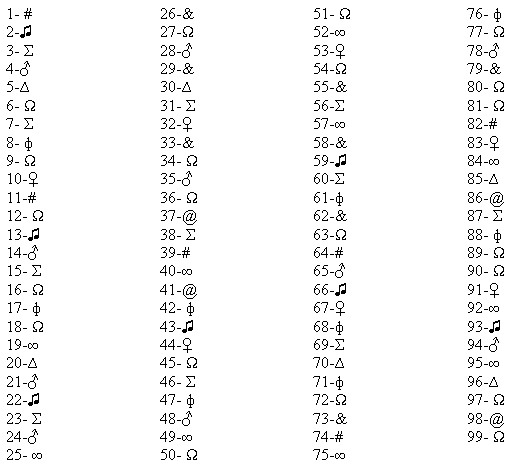

SERVIÇOS EM GERAL
Jesimar da Silva Arantes
Read Mind
Pense em um número em seguida subtraia o seu oposto, pegue esse resultado em módulo, a partir desse resultado observe bem o símbolo correspondente em sua frente. Por exemplo: suponhamos que você pensou em 72, seu oposto é 27. Logo, o resultado dará 72 - 27 = 45.
Após mentalizar o valor clique no botão Adivinhar.

Adivinhar
Adivinhar